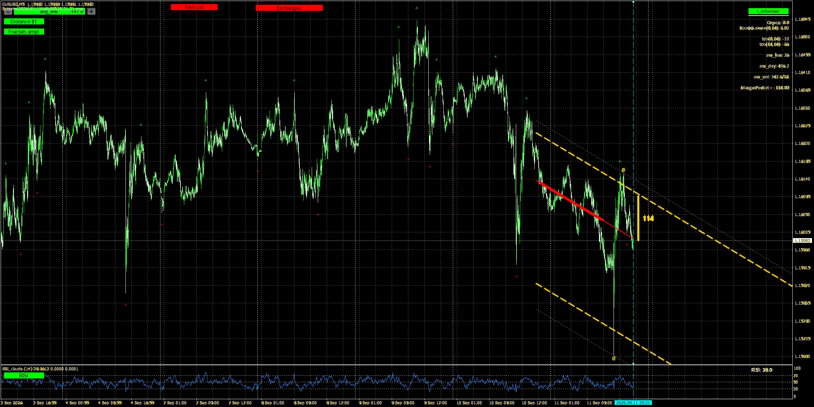

Автоматизированная следящая система?
ТРОЙНАЯ ТОЧКА
Скорее всего, вы уже видели похожие страницы: системы, стратегии, алгоритмы, «уникальные» индикаторы — и почти всегда одна и та же схема: сначала оплата, потом — как повезёт. Протестировать перед покупкой нельзя. Здесь можно: возьмите рабочую версию на 14 дней и поработайте с ней сами на своём графике, прежде чем платить за неё.
Эта следящая система проста, понятна и однозначна.
Работает ли она? Проверьте сами.
Для внутридневного трейдера на MT4, который может работать с любым количеством пар одновременно.
● Тройная точка — простая и надёжная торговая система
Торговля на Forex — не высшая математика. Тройная точка — понятная логика: три условия сходятся на графике в одном месте, и вы это видите. В нашей системе в течение дня рынок придёт к вашей точке входа. Система сообщит вам об этом. Принимать торговое решение самому или делегировать это право программе — решать вам.
Слежение до сигнала
 AVG_LINE
RSI
AVG_LINE
RSI
- Восходящий тренд
- Цена у нижнего канала
- RSI меньше 30
→ Покупка

AVG_LINE RSI- Нисходящий тренд
- Цена у верхнего канала
- RSI больше 70
→ Продажа
1. Центральная линия AVG_LINE зелёного или красного цвета определяет направление сделки.
2. Касание ценой верхней или нижней штрих-линии канала AVG_LINE формирует второе условие.
3. Значение RSI(14) выше 70 или ниже 30 — это третье условие.
Как только все три условия зафиксированы одновременно — вверх или вниз — программа оповещает вас о необходимости сопровождения этого графика.
В этих графических ситуациях нет ничего нового или сверхъестественного — их видно и на голом графике. Мы не изобретаем сигнал: наша программа отслеживает момент, когда все условия совпадают, и сообщает вам об этом, снимая с вас необходимость сидеть и ловить его вручную. Если вы хотите делать это сами — наша система вам не нужна.
Сопровождение после сигнала
Текст, написанный кровью трейдеров
Всегда помните:
- Цена может резко уйти против вас из-за непредвиденных обстоятельств (новости, политические заявления, стихийные бедствия и т. п.).
- Рынок всегда хочет забрать ваши деньги — так же, как вы хотите забрать его. Рынок всегда против вас.
- Рынок иррационален: цена может падать или расти вопреки любой логике.
- Торгуйте на деньги, с которыми уже попрощались. Рынок не любит пугливых денег.
- Рынок — не казино, здесь отыграться нельзя.
…в ринг никто не идёт проигрывать.
График появится позже
2
Оценить последний импульс
Он должен быть минимум в два раза больше расстояния 1 USD — иначе ситуация слабая и её лучше пропустить.
3
Найти пробитый бар
Под него ставится отложенный ордер. Одно из правил — не открывать позицию, если RSI уже перешёл через 50: для покупки он должен оставаться ниже 50, для продажи — выше. Ордер редко исполняется в идеальной точке — какое-то время цена может идти против вас. Не пугайтесь, это временно.
График появится позже
4
Провести ограничивающую линию справа
Она держит трендовую структуру дальнейшего сопровождения.
График появится позже
5
Проверить дивергенцию объёмов
Расхождение между ценой и объёмом подтверждает ситуацию или ставит её под сомнение.
6
Определить точку первого усреднения
Не ближе расстояния 1 USD от входа.
После этих шести шагов решение — входить или нет — остаётся за трейдером. Alert 3 не отменяет этот порядок, а подводит к нему.
После входа — советником или руками
После входа — сопровождение открытой позиции
Перенос в безубыток и закрытие по фиксированной прибыли — отдельная, необязательная часть системы: отдельная программа-советник, не встроенная функция индикатора и не связанная с Alert 3. После того как позиция уже открыта вручную, доступны две настраиваемые функции сопровождения:
- Перенос в безубыток с фиксацией части прибыли
- Полное закрытие позиции по заданному порогу прибыли
Хотите — доверьте это советнику: он тихо следит за уже открытой сделкой и не вмешивается в выбор направления входа. Хотите — делайте то же самое руками, без советника.
Alert 3 — три условия
Без сложной математики
Старт с $10
Наблюдение за парами
→
AVG_LINE + RSI 30/70
→
Ручное сопровождение
→
Журнал результата
MT4
Alert 3
От $10
Рабочее пространство для анализа ситуации, а не обещание автоматической прибыли.
В этой статье
Не набор индикаторов.
Одна рабочая система.
Порядок разговора: от того, как устроена внутридневная работа, до того, как система отбирает момент для ручного включения.
-
01
Как работать внутри дня?
Какая задача у трейдера в течение одной сессии и почему не нужно непрерывно искать сделку.
-
02
Как начать с 10 USD?
Стартовые условия: рабочий объём 0.01 лота, дневная цель 1 USD на 10 USD — то есть 10% от депозита.
-
03
Как видеть все инструменты одновременно?
Один экран, список пар и отбор внимания вместо переходов между графиками.
-
04
Что даёт AVG_LINE?
Не отдельная линия, а каркас для чтения импульса, расстояния, уровней и сопровождения.
-
05
Почему вход не отдаётся программе?
Система собирает условия. Решение войти и способ сопровождения всегда остаются за трейдером.
-
06
Какие 90% «грязной» работы берёт на себя программа?
Наблюдение за парами, отметки, уровни, сессии, журнал и сохранение материала для разбора.
-
07
Где соединяются торговля и аналитика?
Каждая ситуация остаётся на графике и в журнале, чтобы следующий день начинался не с догадок.
-
08
Почему в этой системе нет стоп-лосса?
Это не лозунг, а отдельная логика ручного сопровождения, которую нужно разобрать полностью.
-
09
Почему выбраны именно эти пары?
Ликвидность, спред, характер движения и время активности — не список «любимых» инструментов.
-
10
Как скрипт выбирает инструменты для торговли?
Он не говорит «покупай» или «продавай», а выводит вперёд пары, где есть повод включиться.
-
11
Как отметка на графике превращается в сопровождение?
От первого сигнала внимания — к ручной проверке контекста и дальнейшей работе со сделкой.
От рынка —
к осмысленному действию.
Не торговый робот и не набор отдельных индикаторов. Одна последовательность, в которой каждый шаг имеет своё место.
01
Наблюдение за рынком
Пары, сессии, спред, трендовые границы и рабочие уровни собраны в одном поле зрения.
02
Отбор ситуации
Система не зовёт на каждый бар. Она выделяет совпадения, которые стоит разобрать вручную.
03
Ручное сопровождение
Решение остаётся у трейдера: оценить импульс, уровни, объём и развитие ситуации.
04
Разбор результата
Скриншоты и журнал оставляют не впечатление, а материал для спокойного разбора сделки.
Alert 3 — только один из инструментов системы. Он сообщает о редком совпадении условий на M5, чтобы трейдер вовремя посмотрел на график, а не подменяет весь процесс.
Сигнал — это начало
разбора, а не команда.
Будущие разборы на странице будут строиться по этой схеме: что увидела система, что проверил трейдер и чем закончилась ситуация.
Система позвала к графику
- Ситуация
- На одной из наблюдаемых пар сложились условия Alert 3.
- Действие
- Трейдер открывает именно этот график, смотрит импульс, границы AVG_LINE, объём и время сессии.
- Смысл
- Сигнал не является входом: он экономит внимание и даёт повод начать ручную проверку.
Проверка закончилась отказом
- Ситуация
- Отметка есть, но контекст не подтверждает вход: импульс слабый или рынок уже исчерпан.
- Действие
- Трейдер не открывает сделку и возвращается к наблюдению за всем списком пар.
- Смысл
- Отказ — тоже результат системы: она не заставляет торговать и оставляет решение за человеком.
Сигнал стал началом сопровождения
- Ситуация
- После ручной проверки ситуация признана рабочей.
- Действие
- Трейдер ведёт сделку по развитию цены, уровней и своих правил сопровождения.
- Смысл
- После завершения остаются скриншот и журнал: их можно спокойно разобрать.
Система не принимает решение вместо трейдера.
— Не является обещанием доходности или слепым сигналом «купить / продать».
— Не отменяет необходимость видеть импульс, уровни и контекст рынка.
— Нужна для более собранного ручного сопровождения, а не для торговли без участия человека.
Мы специально искали похожие решения — с такой же ясной точкой входа, с реальными проверяемыми результатами и с бесплатной возможностью протестировать самому. Продукта, который совмещал бы всё это без обещания процента прибыли новичку, мы не нашли.
Проверьте систему
на своём графике
Получите рабочую ознакомительную версию на 14 дней. Без привязки карт и скрытых условий — вы получаете файл для терминала MT4 и краткий регламент по ручному сопровождению.
01
Запрос в Telegram
Напишите нам, чтобы получить файл индикатора (.ex4) и правила сопровождения после алерта.
02
Установка в MT4
Скопируйте файл в каталог данных терминала и прикрепите к любому рабочему графику M5.
03
14 дней проверки
Оцените отбор ситуаций, точность Alert 3 и спокойствие ручной работы на своём счёте.
Запросить демо в Telegram
MetaTrader 4 • Без скрытых списаний • Прямая связь с автором